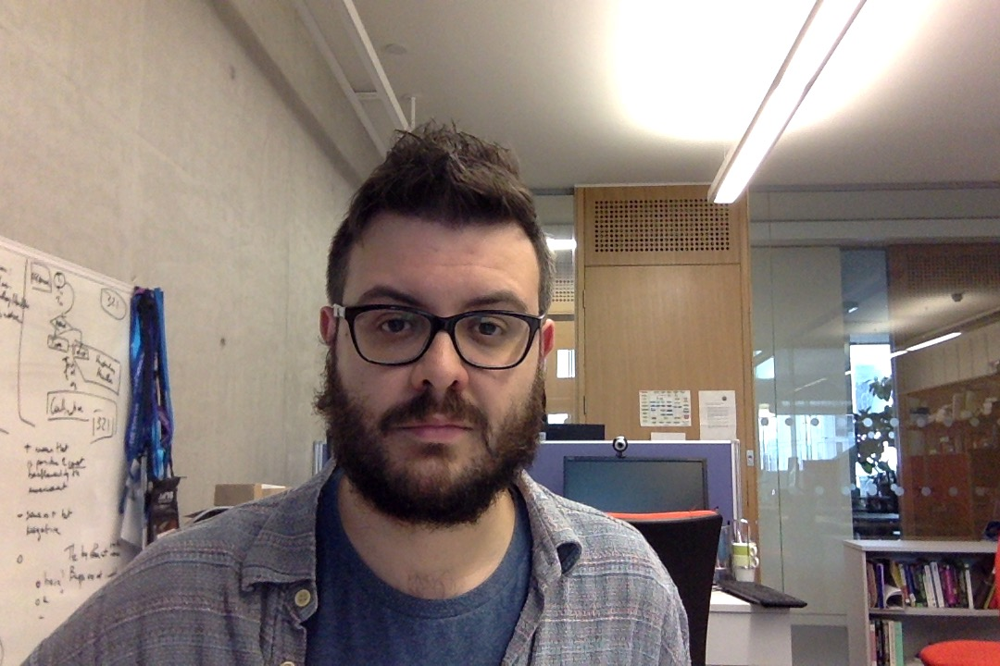

Federico Fancellu
I am currently a PostDoc at the University of Edinburgh working with Mirella Lapata on multilingual semantic parsing. My work focuses in particular on the relation between Universal Dependency and Logical Form.
During my Ph.D. I also developped an interest in chatbots and had the fortune of leading the Edinburgh team in the 2016/2017 Amazon Alexa Challenge, where we developped Edina, an open-ended conversational agent, completely from scratch. I am now trying to put this interest in practice by collaborating in Hatch.ai, a startup to develop AI solutions for financial services.
I recently received my Ph.D. from the University of Edinburgh under the supervision of Bonnie Webber and Adam Lopez. My Ph.D. thesis explored different problems related to automatically detecting and representing negation for NLP in a cross-lingual setting.
Before starting my Ph.D. I have worked (and enjoyed working!) for CNGL(now ADAPT)@TCD as an NLP research engineer.
I have a soft spot for East Asian Languages I have been studying and researching for a decade now.